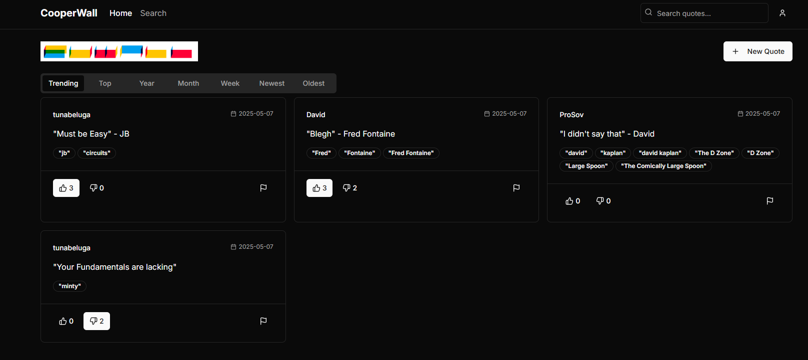

You can find some of my projects below. Special thanks to my classmates for their collaboration and support.
Projects:
CooperWall: A full-stack web application built by a team of three using Spring Boot, PostgreSQL, and React frontend
that lets the Cooper community share memorable quotes. Features include Firebase Auth. for secure access.

ScopeTV: Real-time conversion of analog NTSC video signals into X-Y signals for display on a standard laboratory oscilloscope,
emulating a vintage-style monochrome television.
Color Organ w/ Audio Amplifier: LED display that visualizes music by mapping bass, mids, and treble to different colors. Comes with volume control as well!
Playable Theremin: Theremin that uses analog LC oscillators whose frequency changes with hand-induced capacitance, allowing real-time pitch control based on proximity.